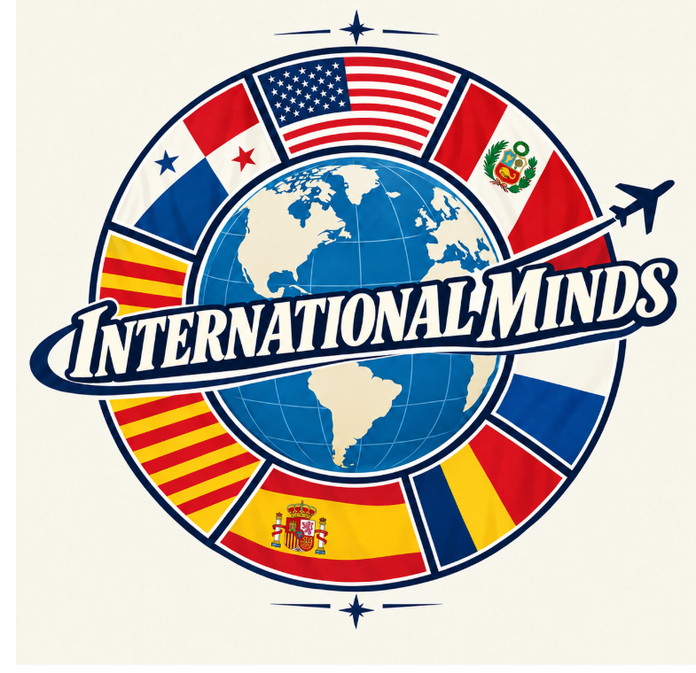

01 · ENCUENTRO
Encuentro
Espacios cómodos para generar relaciones reales entre nacionales y extranjeros.
NEXO transforma la diversidad que ya existe en España en relaciones, participación, aprendizaje, innovación y oportunidades. Porque convivir no debería significar simplemente compartir un espacio.

Un espacio para conectar personas y perspectivas.
NEXO no busca únicamente integrar a las personas extranjeras, sino crear espacios donde nacionales y extranjeros puedan participar conjuntamente.
El objetivo no es que las personas sean diferentes juntas, sino que puedan hacer cosas juntas.
Espacios cómodos para generar relaciones reales entre nacionales y extranjeros.

Experiencias reales que ayudan a cuestionar prejuicios y mejorar la comprensión mutua.

Perspectivas diferentes que aportan nuevas ideas y formas de resolver problemas.

Más oportunidades para que el talento extranjero forme parte activa de la sociedad.
NEXO se plantea como una plataforma sencilla: conocer, conectar y pasar a la acción.
La persona crea un perfil con sus intereses, conocimientos, ciudad y aquello que puede aportar.
La plataforma facilita conexiones con personas que comparten intereses, necesidades o proyectos.
Las conexiones pueden convertirse en actividades, oportunidades laborales, proyectos sociales o intercambio de conocimientos.
La diversidad adquiere valor cuando una relación abre una puerta concreta.

Visibilizar capacidades, experiencias profesionales y conexiones laborales.

Facilitar intercambio de conocimiento y una mayor pluralidad de perspectivas.

Personas con diferentes experiencias colaborando en retos comunes.

Construir una red que conecte experiencias locales con una mirada internacional.
Un espacio inspirado en las mejores dinámicas de una red profesional: perfiles, conexiones, publicaciones, oportunidades y proyectos. La idea es que NEXO pase de ser una propuesta a convertirse en un lugar donde las personas realmente se encuentran.


La España del futuro no se construye separando a quienes llegan de quienes ya están. Se construye encontrándonos.
NEXO · INTERNATIONAL MINDSEste formulario representa cómo funcionaría una primera versión de la plataforma. En una versión completa, permitiría crear perfiles y facilitar conexiones según intereses, capacidades y necesidades.
¿Qué puedes aportar?
Idiomas · conocimientos · experiencias · contactos · ideas · tiempo · ganas de colaborar.